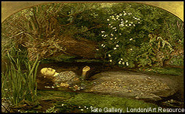

|
Beautiful death?
Sir John Everett Millais's Ophelia
|
|
 |
|
Designed to appeal to the dramatic in you. The English painter Sir John Everett Millais drew his inspiration for Ophelia from a character in William Shakespeare's play Hamlet. In that play, sorrow and rejection drive Ophelia mad. She drowns herself, while floating fully clad down a brook. To capture that scene realistically, Millais required a model to don an antique dress and float in a heated bathtub!
Click here for all the LURID DETAILS on Ophelia's death by drowning. |